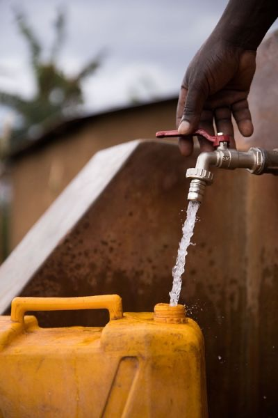

SMALL ACTIONS. MEANINGFUL CHANGE.
See Where Your Support Goes
College students may not always have a large amount to give, but small contributions can add up over time. charity: water connects supporters with real clean-water projects and helps make the impact of giving feel visible, personal, and meaningful.